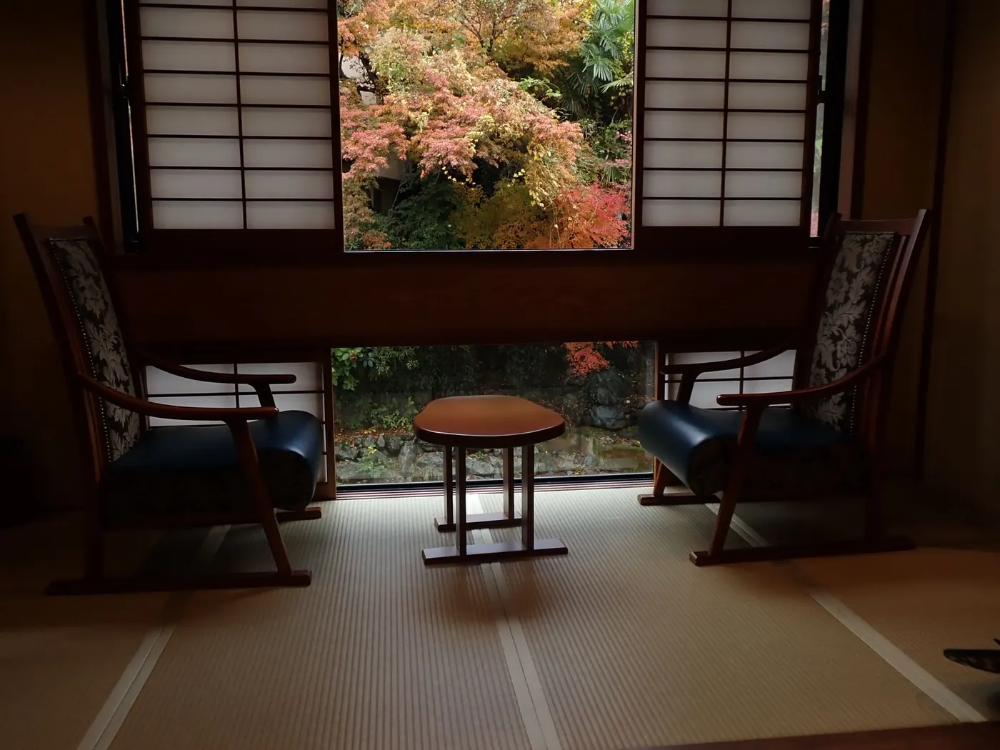
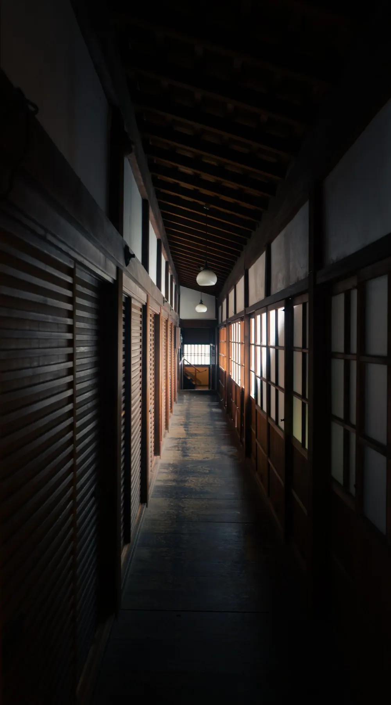
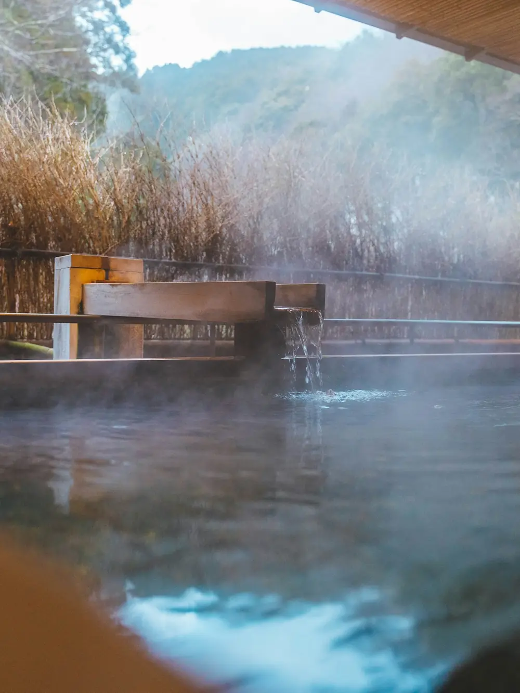
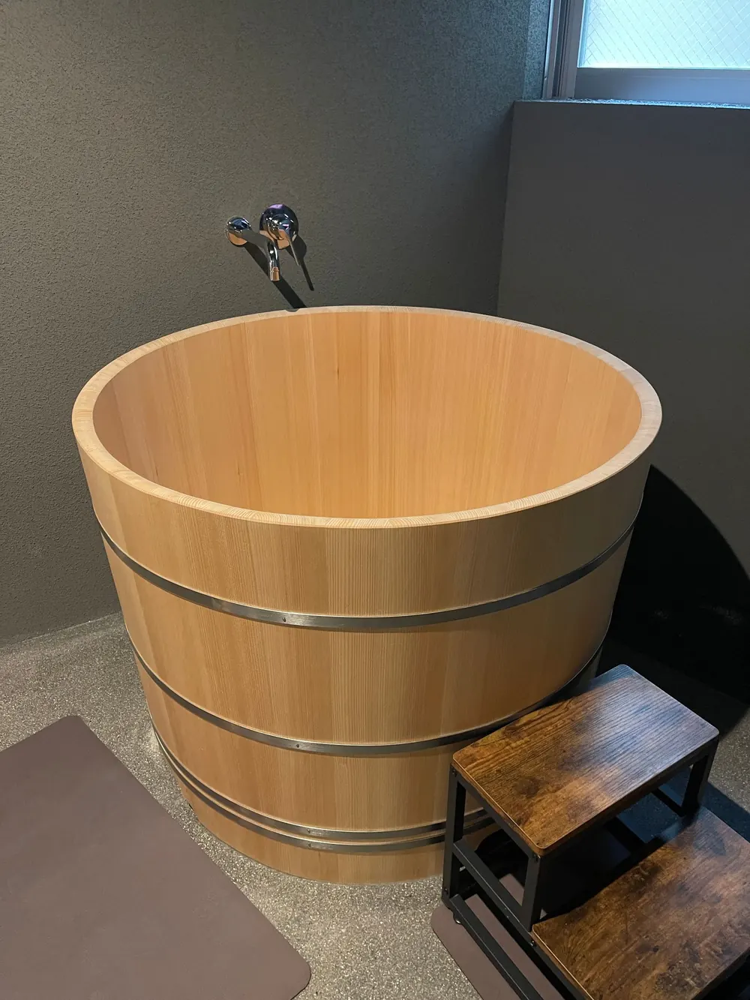
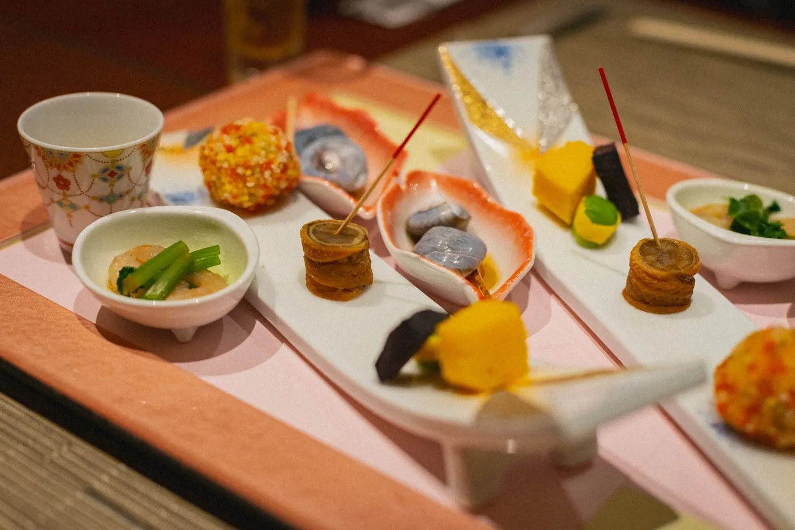
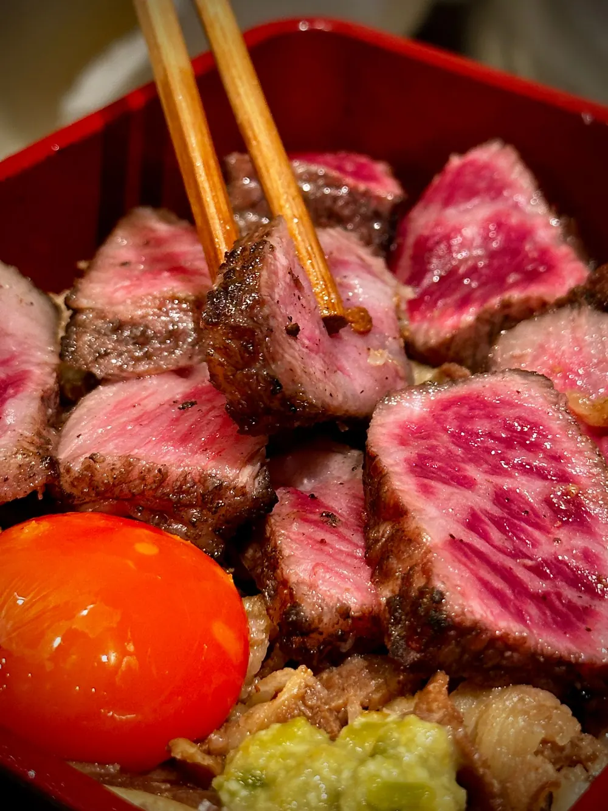
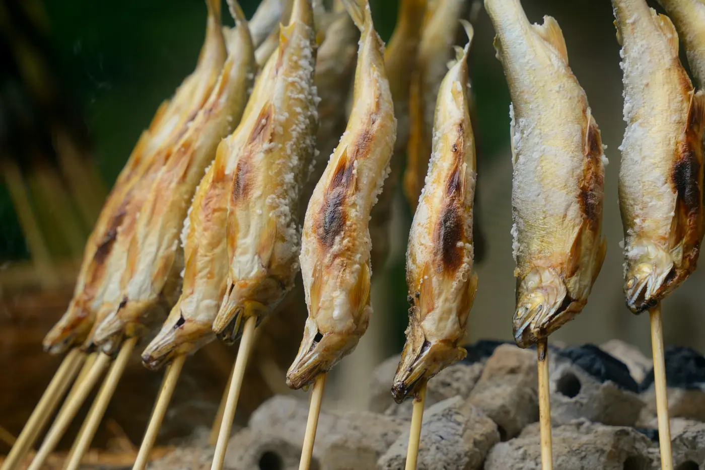
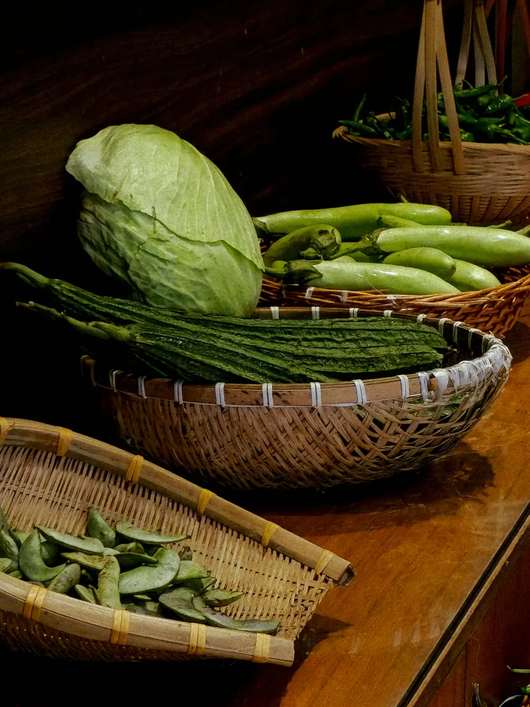
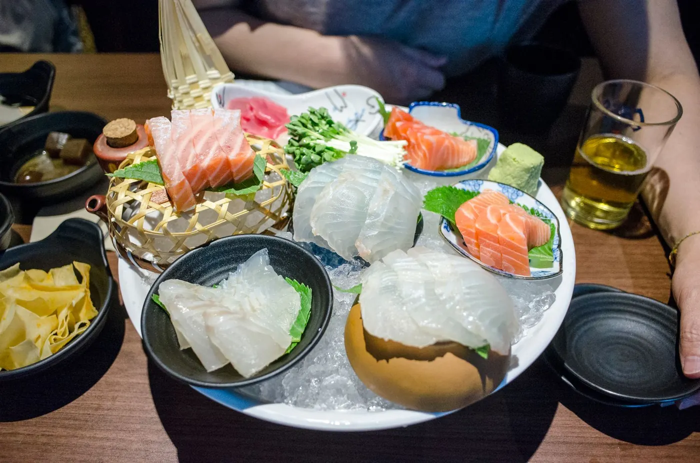
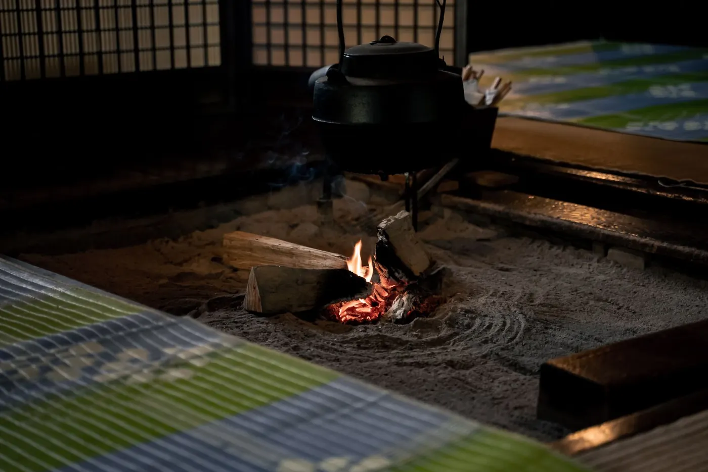

和モダン
畳の落ち着きとベッドの寝心地をあわせた、渓谷側のお部屋です。
- 1泊2食付 2名1室のお一人様料金
- 21,800円〜25,300円（税込）
奥飛騨温泉郷 渓谷沿いの古民家の宿

渓声館は、奥飛騨の渓谷沿いに建つ、
築百年の古民家を移築した小さな宿です。
川のせせらぎと、囲炉裏の火。
そして山あいに湧く湯。
ここにしかない静けさを、
どうぞゆっくり味わってください。


せせらぎだけが、
聞こえる湯船。
露天風呂は川面からわずか数メートル。自家源泉をかけ流しのまま、5つのお風呂で湯めぐりをお楽しみいただけます。便利さよりも、山の宿らしい静けさを大切にしています。





ご夕食は、季節ごとに山の食材を使った会席料理。囲炉裏でじっくり焼き上げる川魚は、宿いちばんの名物です。料理に合う飛騨の地酒もご用意しています。

畳の落ち着きとベッドの寝心地をあわせた、渓谷側のお部屋です。
古民家の太い梁をそのまま生かしたお部屋。囲炉裏を備えたお部屋もございます。

専用の露天風呂と囲炉裏を備えた一棟貸しの離れ。記念日のご旅行におすすめです。